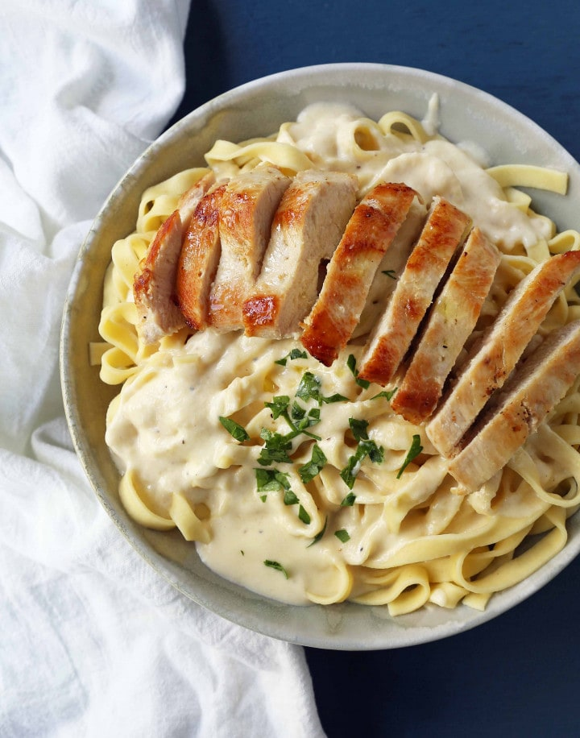

Chicken Fettucine Alfredo

Description
Chicken Fettuccine Alfredo is a type of Italian
pasta dish prepared with fettuccine tossed in
emulsified butter and Parmesan cheese, with
flavour from cream and pan-fried chicken
breast.
Ingredients
- 250g fettuccine
- 750g chicken breast (app. 3-4 filets)
- 200g white button mushrooms sliced if desired
- 100ml cream
- 150ml chicken stock
- 1/3 cup grated parmesan plus more for garnishing
- 1/2 cup butter
- 4 cloves garlic minced
- 1tbsp chopped parsley
- olive oil
- freshly ground black pepper
- sea salt
- blanched broccolini, for sides
Recipe Instructions
- Season chicken breast with salt and freshly
ground black pepper.
- Heat pan, add olive oil then pan fry chicken
breast for 5-6 minutes (depending on the thickness)
on each side. Add 3 tablespoon of butter to the pan,
swirl butter around and continue to cook the chicken
for 2 more minutes while continuously basting chicken
breast with melted butter, set chicken aside and keep
it covered.
- Cook pasta according to instructions, drain then toss
in the remaining butter. Set aside.
- Using the same pan you use cooking the chicken, add
garlic and sauté until fragrant.
- Add mushrooms if using, cook for a minute.
- Now add chicken stock, cream, parmesan and a dash of
sea salt simmer until sauce is reduced and thickens.
Toss in pasta and parsley. Turn heat off.
- Slice chicken breasts, place pasta on serving platter
then top the pasta with sliced of chicken.
- Serve with generous amount of grated parmesan.